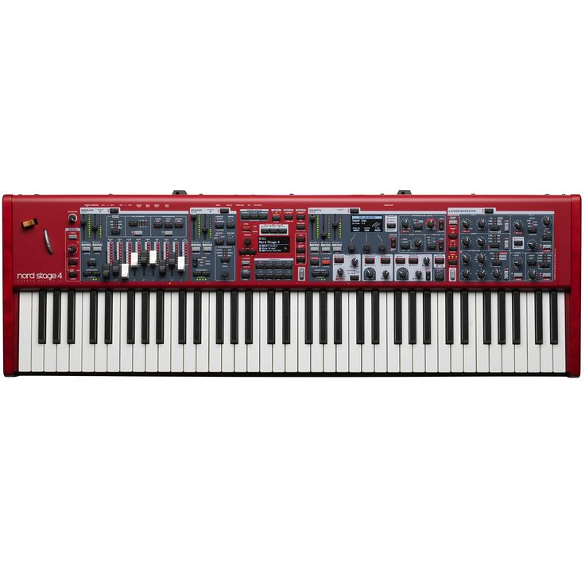

Squier CV 50s Tele MN BPG BLK
Look authentique des années 50 avec vernis brillant. Son : Clinquant, précis et tranchant (twang) grâce aux micros Alnico conçus par Fender.
Acheter maintenantGibson Les Paul Standard 50s HCS
Équipée de deux micros Burstbucker (1 & 2) à aimants Alnico II, elle délivre un son chaud, riche en harmoniques, allant du blues feutré au rock mordant.
Acheter maintenant
Yamaha MODX Workstation 76 touches
Double synthèse FM-X (moderne) et AWM2 (acoustique haute définition). Format : 76 touches semi-lestées, ultra-léger et taillé pour la scène.
Acheter maintenant
Clavia Nord Stage 4 Compact
73 touches semi-lestées Waterfall (toucher de type orgue/piano très fluide) et barres de tirage physiques avec LED.
Acheter maintenant